Після успішного встановлення програми та необхідних компонентів, користувач може запустити її. Після старту програми буде відображено головне вікно, яке зображено на рисунку 1.
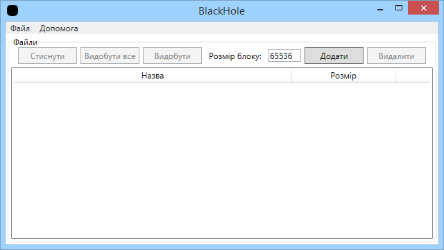Рисунок 1 – Головне вікно програми
Головне вікно складається з головного меню та основної частини. Головне меню складається з двох пунктів «Файл» та «Допомога».
За допомогою першого пункту головного меню користувач може здійснювати роботу з файлами та програмою. Він складається з таких пунктів: «Новий», «Відкрити…» та «Вихід» як зображено на рисунку 2.
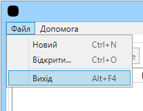Рисунок 2 – Меню «Файл»
Пункт меню «Новий» призначений для створення нових архівів, всі попередні данні (список файлів в архіві) будуть втрачені. Для цього пункту меню назначено сполучення клавіш швидкого доступу «Ctrl+N».
Пункт меню «Відкрити…» призначений для відкриття існуючих архівів з розширенням «*.bh», які були створені даною програмою. При виборі даного пункту меню буде відкрите діалогове вікно, яке зображено на рисунку 3. Для цього пункту меню назначено сполучення клавіш швидкого доступу «Ctrl+O».
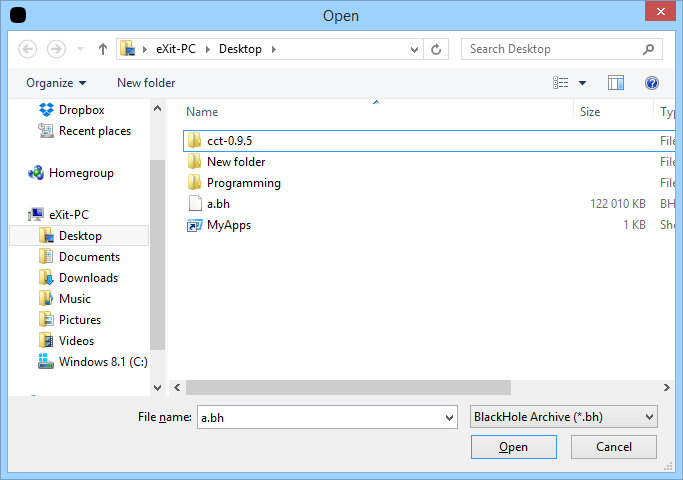Рисунок 3 – Вікно відкриття файлу
Після вибору файлу, програма відображає вміст архіву, як показано на рисунку
Рисунок 4 – Головне вікно з відкритим архівом
Та останній пункт меню «Вихід» закриває програму. Для цього пункту меню назначено сполучення клавіш швидкого доступу «Alt+F4».
Пункту «Допомога» головного меню складається з таких пунктів: «Відобразити допомогу» та «Про програму» як зображено на рисунку 5.
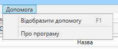Рисунок 5 – Меню «Допомога»
Пункт меню «Відобразити допомогу» відкриває HTML-файл з інструкцією користувача. Цей файл зображено на рисунку 6. Для цього пункту меню назначено сполучення клавіш швидкого доступу «F1».
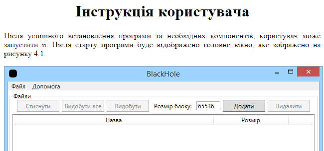Рисунок 6 – Файл з інструкцією користувача
Пункт меню «Про програму» відкриваю вікно з інформацією про дану програму. Це вікно зображено на рисунку 7.
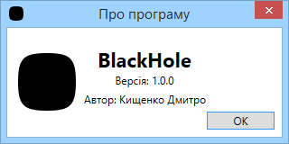Рисунок 7 – Вікно «Про програму»
В основній частині головного вікна є кнопки для роботи з програмою: «Стиснути», «Видобути все», «Видобути», «Додати», «Видалити», які зображені на рисунку 8.
Рисунок 8 – Кнопки для роботи з програмою
Кнопка «Стиснути» призначена для стискання всіх файлів, що були додані до архіву, та створення архіву. Ця кнопка не активна (її не можливо натиснути), якщо в список файлів архіву не додано жодного файлу, як зображено на рисунку 8, а якщо в список додано хоча б один файл, вона становиться автоматично активною, як показано на рисунку 9.
Рисунок 9 – Активна кнопка «Стиснути»
Після натискання кнопки «Стиснути» користувачеві буде запропоновано вибрати місце збереження стиснутого архіву за допомогою діалогового вікна. Після цього почнеться стискання файлу алгоритмом Хаффмана.
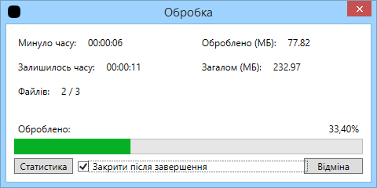Рисунок 10 – Вікно, яке відображає процес стискання
На цьому вікні користувач може спостерігати процес стискання. Переглядати скільки минуло та залишилось часу, скільки оброблено даних, скільки загалом потрібно обробити та який файл за рахунком обробляється в даний момент. Також на цьому вікні відображається прогрес бар та відсотки виконаної роботи. В вікні є перемикач, який встановлює чи закривати вікно після завершення стискання. Також є дві кнопки: «Статистика» та «Відміна». Кнопка «Відміна» дозволяє відмінити виконання стискання.
Кнопка «Статистика» дозволяє відкрити вікно зі статистикою символів – таблицею, яка складається з таких стовбців: символ, вага символу, оригінальний код символу та новий код символу. Це вікно зображено на рисунку 11.
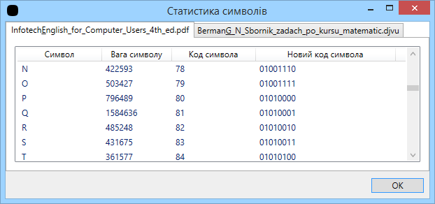Рисунок 11 – Статистика символів
Кнопка «Видобути все» призначена для розпакування всього архіву в обрану папку. Після натискання на кнопку користувачеві буде запропоновано вибрати місце, куди буде розпаковано файли. В процесі розпаковки буде відображено таке саме вікно, як і при стисканні. Ця кнопка стане активна, якщо користувач відкрив архів, інакше вона буде не активною.
Кнопка «Видобути» призначена для розпакування конкретного обраного файлу в обране місце. Після натискання на кнопку користувач вибирає місце збереження файлу, що розпаковується. Ця кнопка є неактивною, поки користувач не вибере файл, який потрібно розпакувати. В процесі розпаковки буде відображатися таке саме вікно, як і при стисканні.
Кнопка «Додати» призначена для додання файлу до списку файлів архіву. При натисканні на дану кнопку користувачеві пропонується обрати файл або файли, які будуть додані до архіву. Після вибору файлів вони з’являться в списку файлів архіву.
Кнопка «Видалити» призначена для видалення файлу з архіву. Ця кнопка стає активною, коли користувач виділяє файл в списку файлів архіву.
Також користувач може змінити розмір блоку в текстовому полі, яке зображено на рисунку 12.
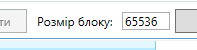Рисунок 12 – Поле для змінення розміру блоку
Розмір блоку міняється одразу, як користувач його вводить, підтверджувати зміну не потрібно. В цьому полі працюють стандартні клавіши швидкого доступу так, як «Ctrl+C» – скопіювати, «Ctrl+V» – вставити, «Ctrl+X» – вирізати, «Ctrl+Z» – відмінити, «Ctrl+U» – повторити.
Також в програмі інсує можливісті використовувати її через консольний інтерфейс. Це може знадобитися при використанні програми та алгоритму Хаффмана в пакетових файлах.
Для використання консольної версії програми необхідно запустити файл «BlackHoleCL.exe». Якщо запустити цей файл без параметрів або з параметрами «-h», «-?», то буде показана коротка допомога, як користуватися програмою та які команди вона підтримує. На рисунку 4.13 зображено приклад довідки.
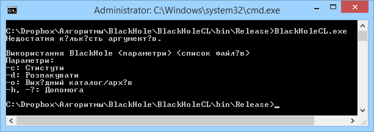Рисунок 4.13 – Запуск програми без аргументів
Для стискання файлів потрібно використовувати команду «-c», а за нею вводили шлях до фалів, які потрібно зжати. Параметр «-o» дозволяє вказати назву вихідного архіву. Якщо не вказати цей параметр, то файли будуть запаковані в архів з назвою «output.bh» в даному каталозі. На рисунку 4.14 зображено приклад стискання файлів.
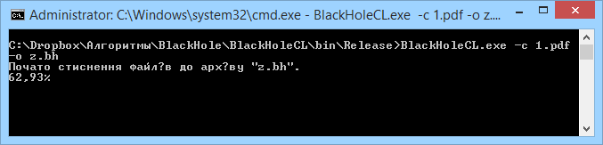Рисунок 4.14 – Стискання файлу
Для розпакування використовується параметр «-d», після нього вказується шлях до архіву. Також, як з параметром «-c», можна додатково вказувати параметр «-o», після якого буде писатися шлях до папки в яку потрібно розпакувати всі файли.
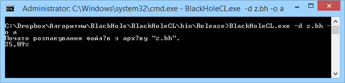Рисунок 4.15 – Розтискання файлів